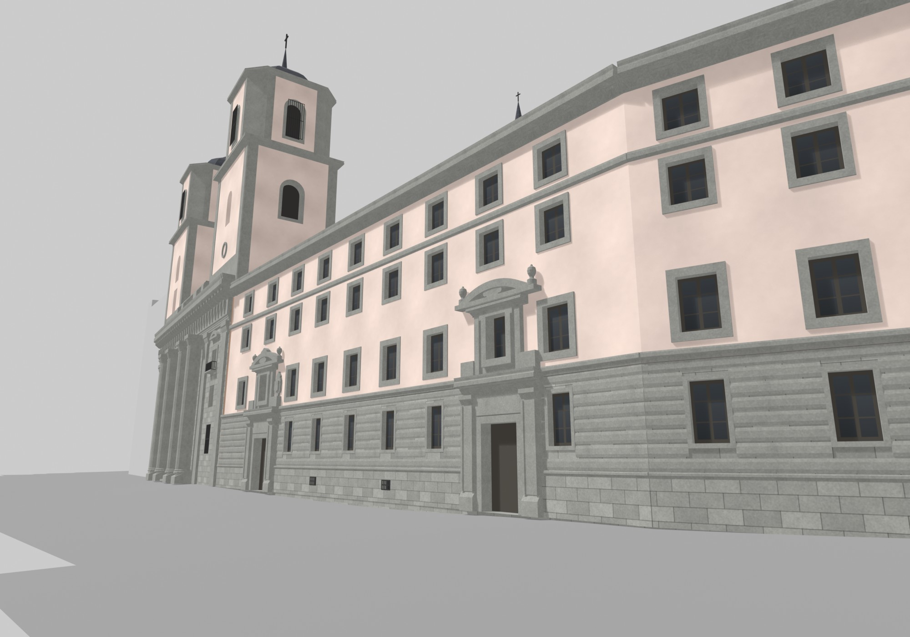
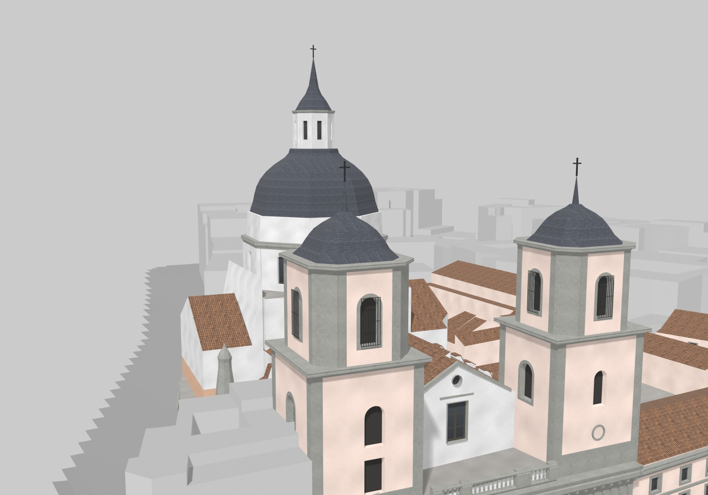
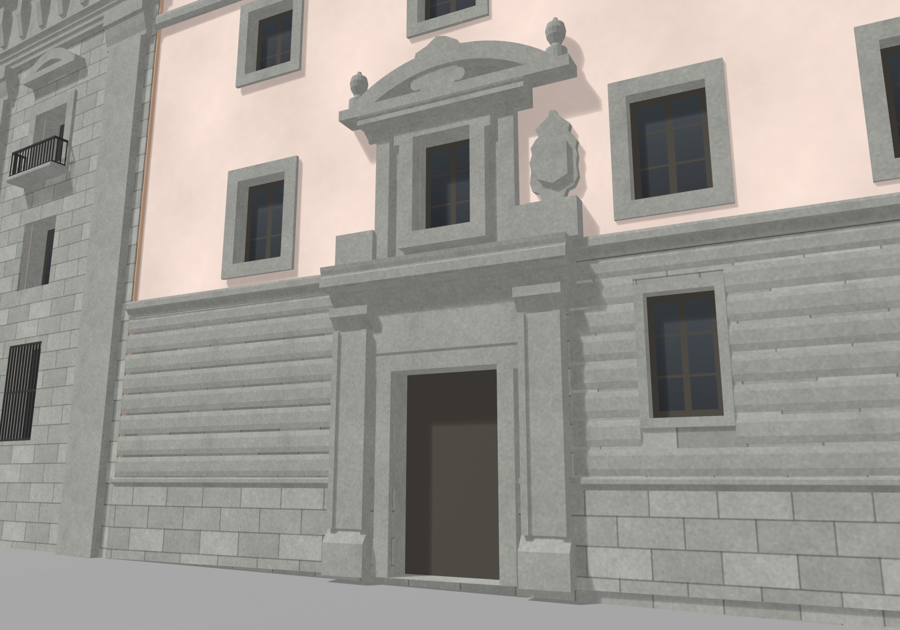
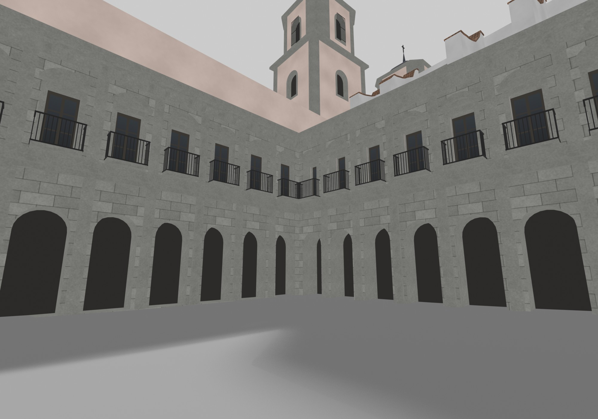
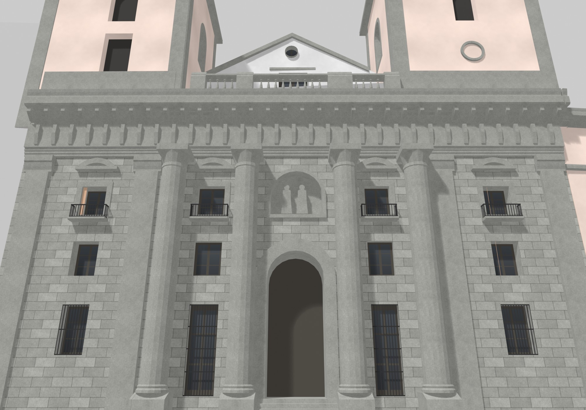
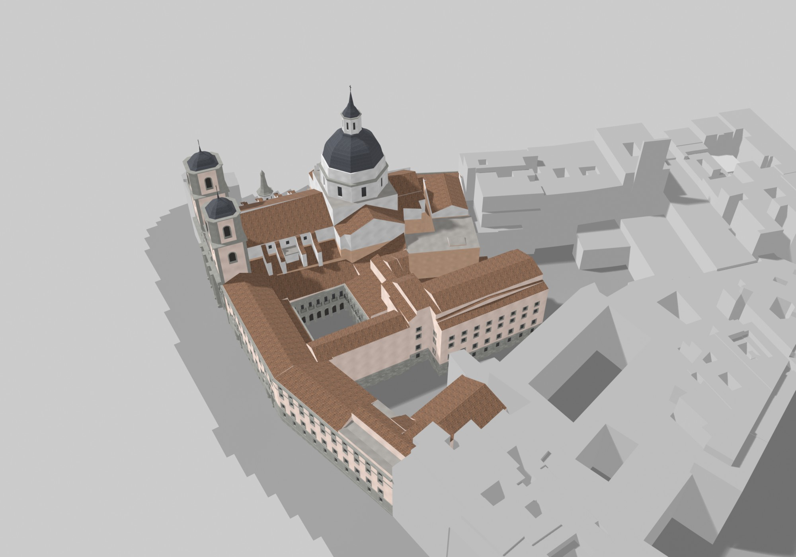

Ir a: , , , , . Arrastrar para girar; clic en el modelo y rueda (o pellizco) para acercar; clic derecho o dos dedos para desplazar. El modelo pesa unos 9 MB.
Cómo se hizo
- La planta sale del Catastro: la huella de cada parte del edificio, en coordenadas reales (ETRS89 / UTM 30N).
- Las alturas salen de la nube de puntos de 2023 del Ayuntamiento (unos 100 puntos por m²). Con ella se ajustan las cubiertas crujía por crujía: plana, a un agua o a dos aguas.
- Para las torres y la cúpula se cortó la nube cada medio metro de altura y se midió el contorno en cada corte. Así salen el tambor, el casquete, la linterna y los campanarios.
- Las fachadas se midieron sobre fotos de Wikimedia Commons y Mapillary, enderezadas y puestas a escala: ventanas, impostas, cornisas y portadas.
- Los colores se tomaron de esas fotos y de la ortofoto. Al final, un control automático compara el modelo con la nube de puntos y con la malla 3D del Ayuntamiento, y señala lo que falta o sobra.
Todo el proceso está en cuadernos de Python y scripts de Blender, en el repositorio, y se puede volver a correr de principio a fin.
Precisión y límites
Comparadas con la capa municipal de alturas de edificios, las cubiertas del conjunto se apartan 0,44 m en la mediana, y el 81 % de los cuerpos queda dentro de ±1 m.
- Es el estado actual, no una reconstrucción histórica. No hay interiores.
- La fachada a Toledo está medida sobre fotos. En las calles de los Estudios, de la Colegiata y del Duque de Alba, y en los patios, las alturas están medidas pero los huecos son estimados: repiten el ritmo de las fachadas con foto.
- Los edificios vecinos van en gris, como volúmenes simples.
- Los remates finos (cruces, agujas, molduras pequeñas) están simplificados.
Vistas






Datos
El modelo se puede descargar en glTF (.glb) o como archivo de Blender. Cada fuente, con su licencia y lo que aporta, está en la lista de fuentes.